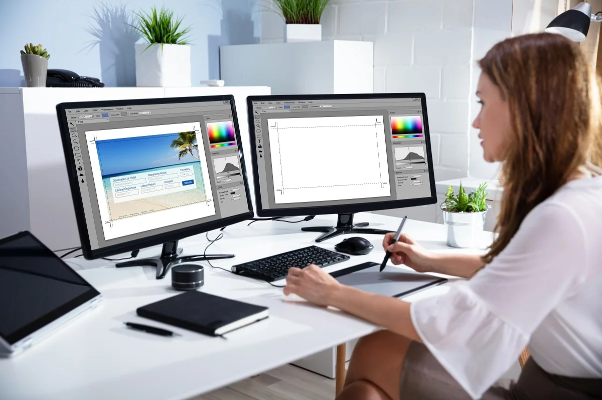
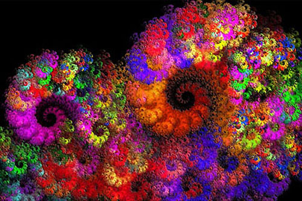

Co to grafika komputerowa?
Grafika komputerowa – dyscyplina zajmująca się cyfrowym tworzeniem obrazów, modeli 3D itd. Grafikę komputerową dzieli się na grafikę rastrową i wektorową, a ze względu na charakter danych na grafikę dwuwymiarową, trójwymiarową i ruchomą. Obejmuje także przetwarzanie obrazów. Grafikę komputerową można także podzielić na teoretyczną skupiającą się na algorytmach graficznych i praktyczną, skupiającą się na manipulacji i tworzeniu obrazów i modelowaniu trójwymiarowym. (np. w programie Blender). Grafika komputerowa stanowi podstawę współczesnych gier, animacji, symulacji oraz wizualizacji. Grafika komputerowa jest działem informatyki i grafiki.
 
Historia grafiki komputerowej
Początki grafiki komputerowej sięgają lat pięćdziesiątych XX wieku, jednak – ze względu na duże koszty komputerów i urządzeń graficznych – aż do lat 80. grafika komputerowa była wąską specjalizacją, a na jej zastosowania praktyczne mogły pozwolić sobie tylko ośrodki badawcze, duże firmy oraz instytucje rządowe. Dopiero, gdy w latach dziewięćdziesiątych rozpowszechniły się komputery osobiste, grafika komputerowa stała się zjawiskiem powszechnym. Powstało też wiele programów dedykowanych grafice komputerowej, np. Gimp, a sama grafika komputerowa otrzymała też status dyscypliny artystycznej.
Rodzaje grafiki komputerowej
- Grafika wektorowa - obraz jest rysowany za pomocą odcinków lub łuków.
- Grafika rastrowa - obraz jest zbudowany z wielu punktów które zawierają informacje o kolorze oraz przezroczystości pixela.